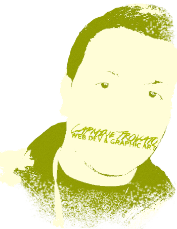

I am a web designer, graphic artist, technology enthusiast, mentor, and future entrepreneur. From Western Pennsylvania, but currently lives in Orlando, Florida.
In the corporate world, I’ve developed branding for companies, communications, and advertising via screenprinting. I’ve created media such as designing and developing websites. Along with my many other digital aspects, I’m also passionate about Film, Animation, and Photography.